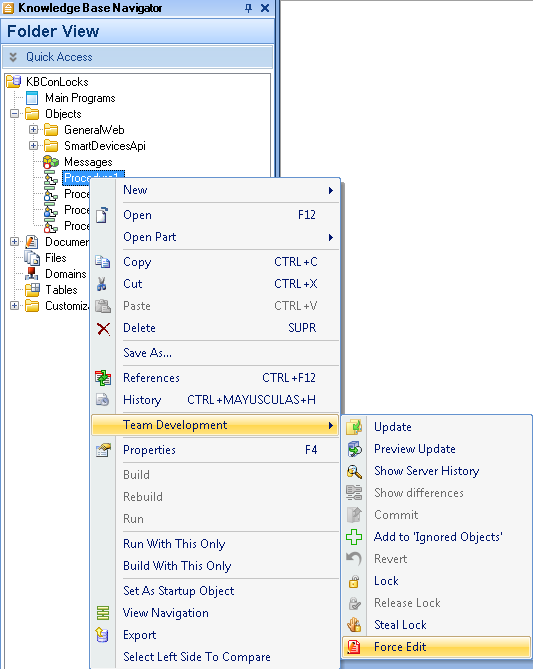

When working in a team using GXserver you may required that every object to be changed must be locked first. In this situation, Knowledge Base objects are, by default, opened as read-only. If you need to change the object without acquiring a lock you must use the Force Edit option. The object can be modified but a lock must be acquired before commiting changes.  See also
GeneXus Server Versioning Models
|
| Backlinks |
| IDE Icon overlay |
| Team Development Contextual Menu |